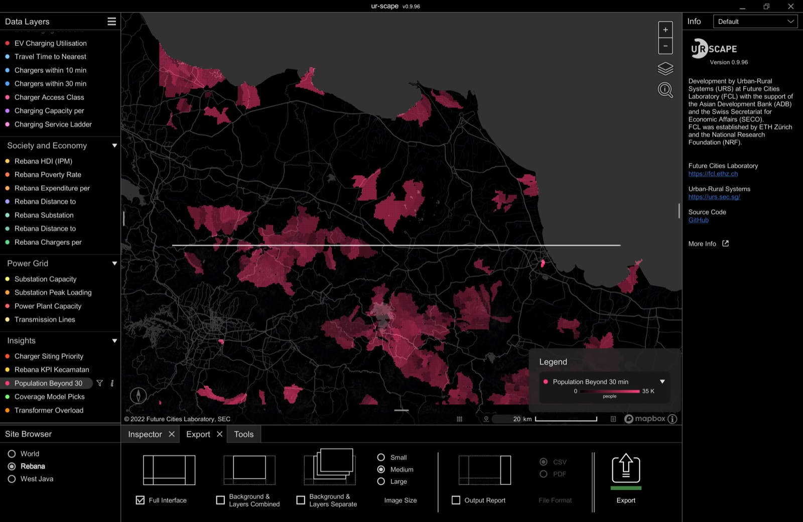
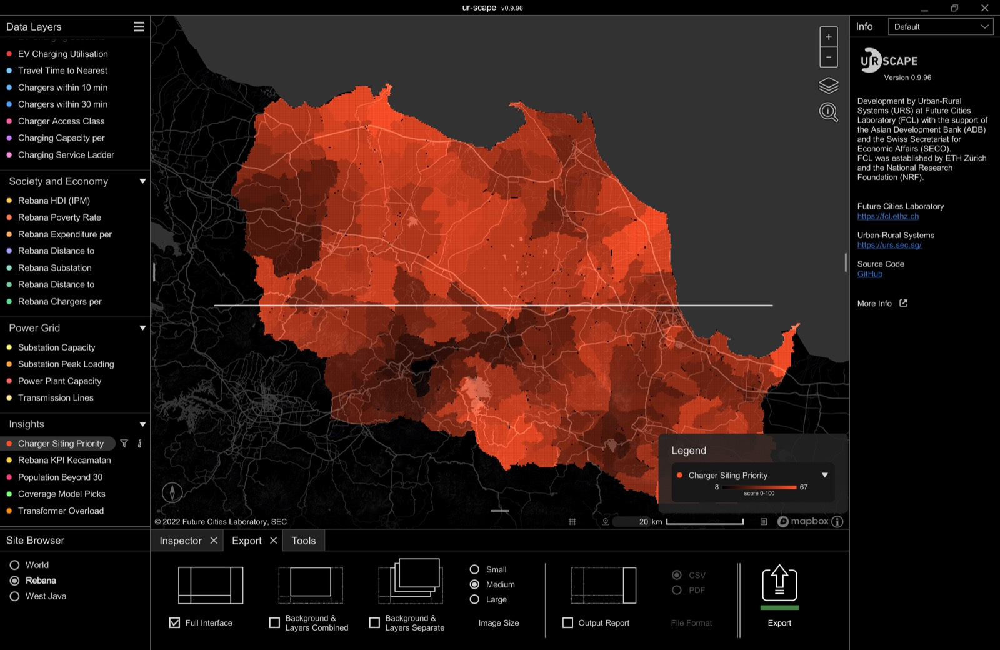
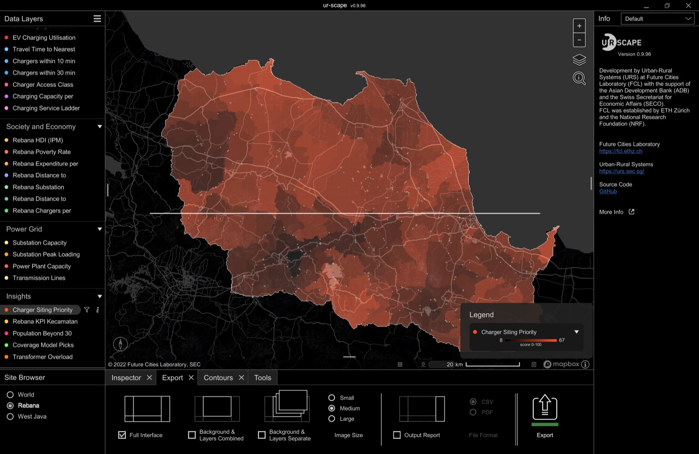

Cara memakai ur-scape untuk Rebana & West Java
Panduan praktis: apa itu tiap panel, tombol apa yang ditekan, dan resep analisis yang siap dipakai di 2nd Powering Rebana Workshop (Cirebon, 5–6 Nov 2026). Semua lapisan dibangun dari repo pathwaysevcharging — data yang sama dengan web ini.
2. Site Browser — Rebana vs West Java
3. Data Layers: nyalakan, filter ▽, info ⓘ
4. Navigasi peta & background
5. Inspector (garis & area)
6. Contours — irisan beberapa lapisan
7. Tools lain: Reachability, Timeline, Planning
8. Export gambar & laporan
9. Resep analisis untuk workshop
10. Daftar lapisan & artinya
11. Update data dari repo
12. Kalau ada masalah
1. Konsep dasar ur-scape
ur-scape (Future Cities Laboratory, ETH Zürich/Singapore) adalah alat perencanaan berbasis grid raster. Setiap lapisan adalah kotak-kotak sel dengan satu nilai per sel (misal: menit perjalanan, jumlah charger, skor 0–100). Tiga ide kunci:
- Site = wilayah + resolusi. Site Rebana memakai sel 300 m (519 × 408 sel), site West Java memakai sel 0,5 menit busur (≈ 0,9 km) untuk Jabar–Jakarta–Banten. Isinya 28 lapisan yang sama, Rebana lebih halus.
- Layer dinyalakan/dimatikan dengan klik; beberapa layer bisa aktif bersamaan dan saling ditumpuk dengan transparansi.
- Filter ▽ membatasi rentang nilai yang ditampilkan (contoh: hanya sel dengan Travel Time > 30 menit). Semua tool (Contours, Inspector) bekerja pada hasil filter, bukan data mentah — ini kunci analisisnya.

2. Site Browser — pilih Rebana atau West Java
3. Data Layers: nyalakan, filter, info
Panel kiri dikelompokkan: EV Charging · Society and Economy · Power Grid · Insights. Klik segitiga ▼ di judul grup untuk melipat/membuka.
| Aksi | Cara | Hasil |
|---|---|---|
| Nyalakan lapisan | Klik nama lapisan | Nama jadi terang, peta diwarnai; titik warna di kiri = warna lapisan |
| Tumpuk lapisan | Klik lapisan kedua, ketiga… | Semua yang terang ditampilkan bersamaan (transparan). Matikan dengan klik lagi |
| Filter nilai ▽ | Klik ikon ▽ di kanan nama lapisan aktif | Muncul slider min–max (atau daftar kategori untuk lapisan kategorik). Geser untuk hanya menampilkan rentang tertentu; angka bisa diketik |
| Info ⓘ | Arahkan/klik ikon ⓘ | Popup: extents, ukuran (155,7 × 123,2 km untuk Rebana), resolusi, unit, tahun, sumber, link repo, citation = rumus/definisi lapisan |
| Legenda warna | Lihat kanan bawah peta saat lapisan aktif | Gelap = nilai rendah, terang/jenuh = nilai tinggi (skala tiap lapisan) |
| Hanya satu lapisan | Matikan yang lain (klik) | Peta lebih bersih untuk export |

4. Navigasi peta & background
- Geser: drag kiri. Zoom: scroll, atau tombol +/− kanan atas. Miring/putar 3D: drag kanan (tekan ikon kompas kiri bawah untuk kembali ke utara).
- Ikon lapisan (⧉) kanan atas = ganti peta dasar (dark/light/satellite, perlu internet; token Mapbox default bawaan). Ikon kaca pembesar = cari nama tempat.
- Skala & grid: toolbar kecil bawah peta — tampilkan grid sel (⊞) dan skala km.
- Hover di sel mana pun menampilkan nilai sel di panel Info kanan (bila mode Info "Default" aktif).
5. Inspector — baca angka sepanjang garis atau di dalam area
Tab Inspector (bawah) punya dua mode: Line dan Area. Keduanya merangkum semua lapisan yang aktif di panel Info kanan.
6. Contours — cari sel yang memenuhi beberapa syarat sekaligus
Contours menggambar batas (dan menghitung luas) irisan semua lapisan aktif setelah filter. Ini cara ur-scape menjawab "di mana tempat yang A dan B dan C?" tanpa GIS.

7. Tools lain
| Tool | Fungsi | Status untuk site kita |
|---|---|---|
| Reachability | Isokron jarak tempuh dari titik yang diklik, di atas jaringan jalan | Perlu file jaringan _graph.csv per site (belum disertakan). Gunakan lapisan Travel Time to Nearest Charger (TTM r5r desa→desa) sebagai pengganti — sudah memperhitungkan jalan nyata |
| Timeline | Memutar lapisan yang punya beberapa tahun (kode _YYYYMM pada nama file) | Semua lapisan saat ini 2026 saja. Kalau nanti ada data PLN 2025/2027, cukup tambah file dengan kode tanggal berbeda dan slider waktu muncul otomatis |
| Planning | Menggambar "cat" perubahan guna lahan/skenario di atas grid dan melihat dampaknya ke lapisan lain | Bisa dipakai untuk menandai kandidat SPKLU manual dan menghitung ulang ringkasan Inspector |
| Word Cloud / Municipal Budget | Demo FCL untuk data teks/anggaran | Tidak relevan, abaikan |
8. Export gambar & laporan
~/Desktop/ur-scape Export/ dengan nama YYYYMMDD_HHMMSS_…png.9. Resep analisis untuk workshop
Resep A — "Di mana gap akses?" (5 menit)
- Site Rebana → nyalakan Population Beyond 30 min (Insights).
- Sel terang = penduduk yang > 30 menit mobil dari SPKLU terdekat. Lihat kantong Indramayu barat & Kuningan selatan.
- Inspector → Area di satu kantong → baca total penduduk. Export Combined.
Resep B — "Kandidat lokasi SPKLU prioritas" (10 menit)
- Nyalakan Charger Siting Priority, filter ▽ min 60.
- Tambah Rebana Substation Headroom, filter min 20 MVA; tambah Coverage Model Picks (titik yang direkomendasikan model p-median/MCLP).
- Tools → Contours → luas & jumlah kantong. Bandingkan dengan Rebana KPI Kecamatan untuk urutan kecamatan.
Resep C — "Apakah grid siap?" (5 menit)
- Nyalakan Substation Peak Loading (Power Grid) filter ▽ min 80 % + Transmission Lines.
- Tumpuk Transformer Overload Share (Insights) — porsi trafo distribusi yang sudah overload per hex.
- Tumpuk Chargers within 30 min: SPKLU yang ada di area gardu penuh = risiko; area longgar tanpa SPKLU = peluang.
Resep D — "Keadilan spasial (equity)" (10 menit)
- Nyalakan Rebana Poverty Rate filter min 10 % dan Charger Access Class → centang hanya Underserved/No access.
- Contours → sel miskin dan tanpa akses: ini argumen equity untuk subsidi lokasi.
- Lawan-cek dengan Charging Capacity per Household (E2SFCA) — kapasitas per rumah tangga di sel yang sama.
10. Daftar lapisan & artinya
| Grup | Lapisan | Arti / unit | Sumber |
|---|---|---|---|
| EV Charging | Stations · Chargers · Energy · Sessions · Utilisation | Jumlah SPKLU, jumlah charger, kWh/bulan, transaksi/bulan, utilisasi % per sel | PLN Charge.IN Jun 2026; transaksi PLN Jabar Mar 2026 |
| Travel Time to Nearest Charger | Menit mobil dari desa ke SPKLU terdekat | TTM r5r (Alyas Widita), GADM 4.1 | |
| Chargers within 10 / 30 min | Jumlah charger terjangkau dalam 10/30 menit | idem | |
| Charger Access Class | Kategori: Good / Fair / Underserved / No access | idem | |
| Charging Capacity per Household | E2SFCA: kW per 1.000 rumah tangga | idem + Kontur 2023 | |
| Charging Service Ladder | Tangga layanan (kategori) gabungan akses × kapasitas | idem | |
| Society & Economy | Population Density | jiwa/km² | Kontur 2023 |
| Rebana HDI · Poverty · Expenditure | IPM, % miskin, pengeluaran per kapita per kecamatan | BPS 2024 (analysis/rebana_data.json) | |
| Rebana Distance to Substation / Charger · Substation Headroom · Chargers per Kecamatan | km, km, MVA sisa, jumlah | RUPTL × OSM; PLN | |
| Power Grid | Substation Capacity · Substation Peak Loading | MVA; % beban puncak GI | RUPTL 2025-2034 × OSM; beban GI PLN UID Jabar |
| Power Plant Capacity · Transmission Lines | MW; kelas 70/150/500 kV | idem | |
| Insights | Charger Siting Priority | Skor 0–100 gabungan kebutuhan, permintaan, kesiapan grid | turunan repo |
| Rebana KPI Kecamatan | Peringkat KPI kecamatan (semakin tinggi semakin perlu intervensi) | turunan repo | |
| Population Beyond 30 min | Jiwa > 30 menit dari SPKLU | TTM × Kontur | |
| Coverage Model Picks | Lokasi pilihan model cakupan (kategori) | analysis/ | |
| Transformer Overload Share | % trafo distribusi overload per hex H3 | idm_hex |
Definisi lengkap tiap lapisan (rumus, input) ada di popup ⓘ masing-masing lapisan dan di urscape/build.py.
11. Update data dari repo (satu tempat)
Semua lapisan dibangun otomatis dari repo. Kalau data berubah (PLN baru, TTM baru), jalankan:
python3 ttm/compute.py # TTM → ttm/ttm.json python3 analysis/rebana_build.py # → analysis/rebana_data.json python3 urscape/build.py # site West Java (0,5′) + zip + QGIS GeoTIFF + payload web python3 urscape/build.py Rebana --keep # site Rebana (300 m) + payload web # lalu di Mac: python3 urscape/out/install.py "/path/ke/ur-scape/Data" # salin kedua site + layers.csv/citations.csv
Buka ulang ur-scape → file .csv dikonversi ke .bin otomatis. Web explorer (urscape_explorer.html) membaca payload yang sama, jadi web dan desktop selalu sinkron setelah git push.
12. Kalau ada masalah
| Gejala | Penyebab | Solusi |
|---|---|---|
| ur-scape tidak muncul saat dibuka pertama | Build Intel, butuh Rosetta & ~15 detik | Tunggu; kalau tetap tidak muncul, Terminal: open -a ur-scape |
| Site Rebana / lapisan tidak ada di daftar | Data belum disalin atau layers.csv belum diupdate | Jalankan install.py ulang (idempoten), buka ulang app |
| Lapisan tampil tapi warna kosong/satu warna | Filter ▽ terlalu sempit atau lapisan lain menutupi | Reset filter (geser ke min–max), matikan lapisan lain |
| Peta dasar hitam polos | Tidak ada internet / token Mapbox | Lapisan tetap jalan; untuk basemap, sambungkan internet |
| Muncul dua tanggal untuk lapisan sama | File lama (_202603) dan baru (_202606) sama-sama ada | Pindahkan file lama keluar dari Data/Sites/<site>, atau biarkan: Timeline akan menampilkannya sebagai dua waktu |
| Reachability tidak aktif | Butuh _graph.csv jaringan jalan | Pakai lapisan Travel Time; atau ekspor jaringan OSM ke format ur-scape (pekerjaan lanjutan) |
Panduan resmi: ur-scape.com · sumber kode ur-scape: GitHub FCL (link di panel Info kanan). Panduan ini bagian dari repo pathwaysevcharging (Qashtalani Haramaini).